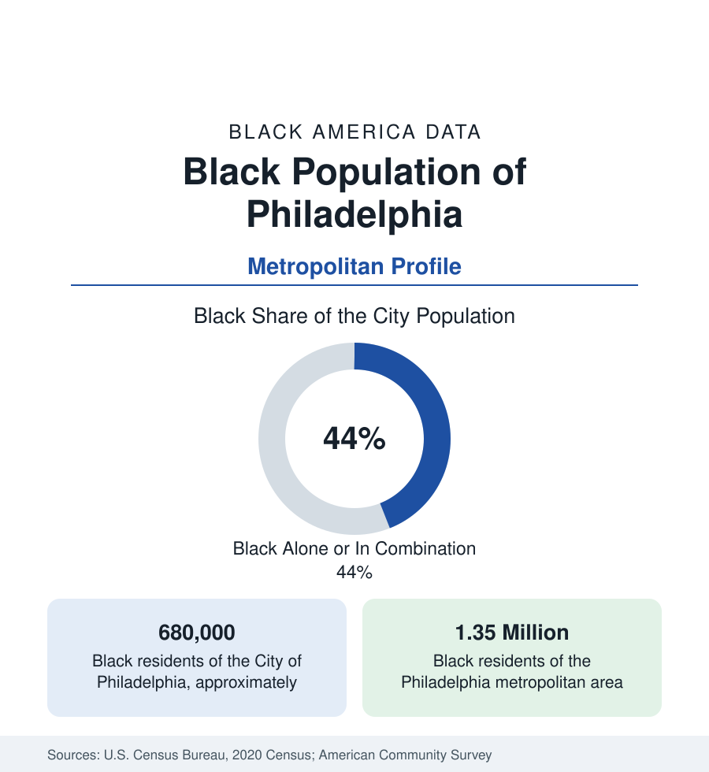

Black Cities
Black Philadelphia: Two in Five of the City of Brotherly Love
Philadelphia holds about 680,000 Black residents in the city and 1.35 million across the metro — one of the oldest and largest Black populations in the North. The census profile.

Philadelphia holds about 680,000 Black residents within the city — Black alone or in combination, more than two in five of its 1.6 million people — and about 1.35 million across the metropolitan region. It is one of the oldest Black populations in the North: free Black Philadelphians built the nation's first independent Black churches while slavery still existed blocks away, and the city received the Great Migration's earliest waves up the Atlantic coast. The modern data describe a Black metropolis of deep institutions and stark internal divides, spread across rowhouse neighborhoods and an increasingly suburban ring.
The Oldest Northern Roots
Philadelphia's Black history begins at the nation's founding: the city held one of the largest free Black populations of the early republic, and its institutions were prototypes — Mother Bethel African Methodist Episcopal Church, founded in the 1790s on land still held today, is the mother church of the first Black denomination; the Free African Society organized mutual aid a decade before 1800. Abolitionist networks, Black newspapers, and convention movements ran through the city across the nineteenth century, and the Seventh Ward — mapped famously at the century's end in the first great empirical study of Black urban life, conducted from the University of Pennsylvania — held a Black professional class of national standing. Slavery's proximity (the city bordered slave states, and its port traded with them) and periodic violence against Black residents mark the record the historians document alongside the achievement.
The Neighborhood Map
The modern city's Black geography is comprehensive. North Philadelphia — from the historic Seventh Ward's successors around South Street to the vast rowhouse grids of Tioga, Nicetown, and Logan — holds the largest concentration; West Philadelphia, with its Victorian housing stock and the University City edge, is the second; Southwest Philadelphia and the far Northeast add growing, increasingly immigrant-influenced districts; Germantown and Mount Airy in the northwest preserve the city's most famously integrated, middle-class Black communities, some of them Black for a century. The suburban ring holds the growth: Delaware County's Upper Darby and Yeadon, Montgomery County's Cheltenham and Norristown, and South Jersey's Camden (a majority-Black small city in long economic difficulty) and suburbs each record Black populations that have grown across every recent census.
Institutions and Employment
The institutional layer is anchored educationally by Cheyney University — founded in 1837, the nation's oldest historically Black institution — in the western suburbs, and by Lincoln University beyond them, with Temple and the city's universities carrying the large modern enrollments. Employment runs on the region's eds-and-meds economy — the hospital and university systems are the largest employers of Black Philadelphians as of the region generally — with city government, the transit authority, and the school district the great public employers of this reference's public-sector profile. The economic data beneath the institutional strength are difficult: Black Philadelphia's poverty rate runs near a quarter of the population, and median Black household income trails the metro's other metros' Black medians in this section, a profile the housing data deepen — Philadelphia's low housing costs made it a city of Black homeowners (its Black homeownership rate runs above peer cities) in aging housing stock.
Composition and Change
The city's Black population was roughly stable across the most recent censuses while the metro's grew — the suburbanization arithmetic of the section generally — and its composition is layering: one of the East Coast's larger African immigrant communities (Liberian above all, concentrated in the Southwest and Delaware County) and a long-established Caribbean population joined the native-born base. Gentrification pressure in the districts adjoining Center City and University City appears in the tract data as declining Black counts in historically Black neighborhoods even as the city's total Black population holds — the displacement pattern, in measured form, that several profiles in this section record.
Reading the Philadelphia Numbers
Philadelphia is the profile of depth without growth: the North's most historic Black population, still its third-largest urban concentration, holding its numbers while the growth metros multiply theirs. Its figures reward the long view — institutions founded in the eighteenth century still anchoring neighborhoods, a homeownership tradition surviving on modest incomes — and its difficulties are the section's most documented case that cultural and political depth do not by themselves move the income tables.
More in Black Cities
Black Atlanta: Population, Distribution, and Growth of a Black Metropolis
Metro Atlanta holds more than two million Black residents — roughly one in three, second only to New York. The suburban distribution, migration history, and composition of Black Atlanta in the census data.
Black New York: The Largest Black Population in America
The New York metropolitan area holds about 3.4 million Black residents — more than any metro in the nation — and the city itself about two million. The census profile.
Black Washington: The District and the Metro
The Washington metro holds about 1.6 million Black residents, and the District itself — long a majority-Black city — now records a Black share near 41 percent. The census profile.
Source: U.S. Census Bureau, 2020 Census; American Community Survey; Population Estimates Program.